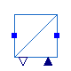

Variable speed drive power electronics model
This package contains the power electronics component of the variable speed drive model.
Extends from Modelica.Icons.Package (Icon for standard packages).
| Name | Description |
|---|---|
| AC2DCandDC2AC | Phasor based voltage source converter model. |

OpenIPSL.Electrical.VSD.Generic.PowerElectronics.AC2DCandDC2ACPhasor based voltage source converter model.
The AC2DCandDC2AC component represents the power electronics component of the variable speed drive. The model provides an interface between two terminals. Terminal pin p is related to the grid bus side and terminal pin n is related to the motor terminal bus. The model is an average representation of the switching components of a real variable speed drive, thus being ideal for long simulation durations on phasor dynamic simulations.
The model has one input and one output connectors. The m_input input connector represents the pwn modulation index, while the Vc output connector represents the capacitor voltage value used in the controller logic block.
The modelling of such devices is based, mainly, on the following reference:
Extends from OpenIPSL.Electrical.Essentials.pfComponent (Partial model containing all the parameters for entering power flow data).
| Name | Description |
|---|---|
| Power flow data | |
| S_b | System base power [V.A] |
| V_b | Base voltage of the bus [V] |
| fn | System frequency [Hz] |
| P_0 | Initial active power [W] |
| Q_0 | Initial reactive power [var] |
| v_0 | Initial voltage magnitude [1] |
| angle_0 | Initial voltage angle [rad] |
| displayPF | Display power flow: |
| DC Link Parameters | |
| Rdc | DC link resistance [Ohm] |
| Ldc | DC link inductance [H] |
| Cdc | DC link capacitance [F] |
| m0 | Initial PWM modulation value |
| Parameter mask | |
| enableS_b | Enable S_b in parameter list |
| enableV_b | Enable V_b in parameter list |
| enablefn | Enable fn in parameter list |
| enableP_0 | Enable P_0 in parameter list |
| enableQ_0 | Enable Q_0 in parameter list |
| enablev_0 | Enable v_0 in parameter list |
| enableangle_0 | Enable angle_0 in parameter list |
| enabledisplayPF | Enable displayPF in parameter list |
| Name | Description |
|---|---|
| p | Grid side pin |
| n | Motor side pin |
| m_input | PWM modulation index input |
| Vc | Value of Real output |